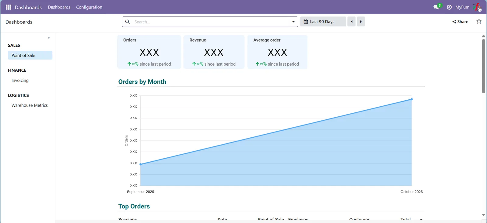
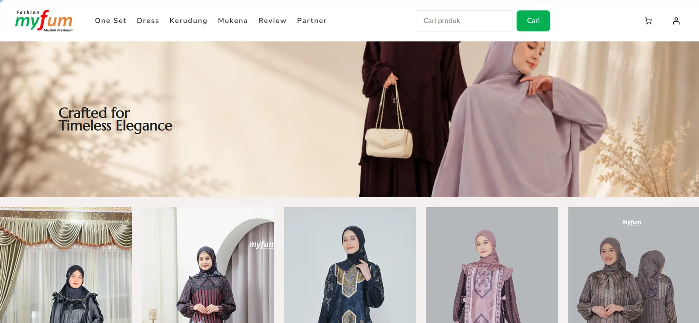
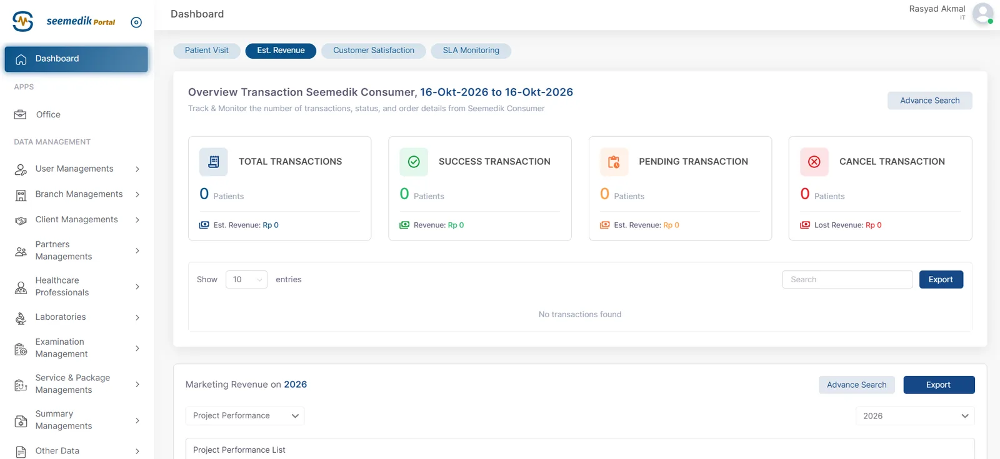
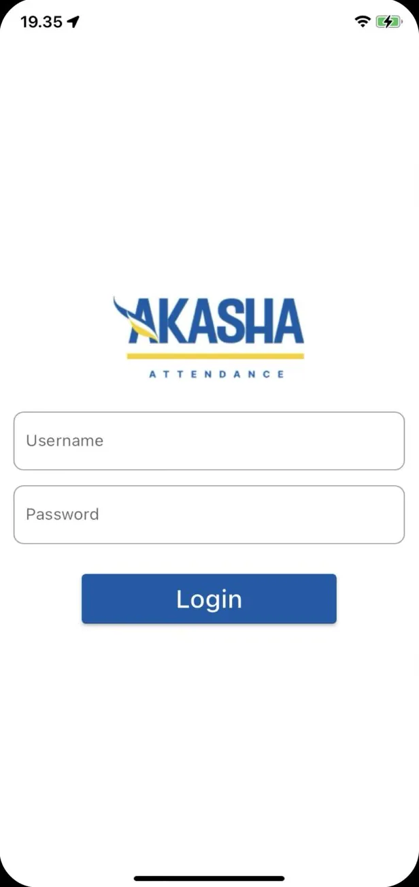
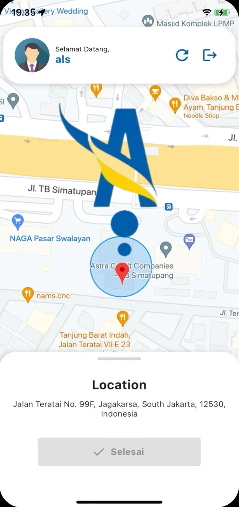
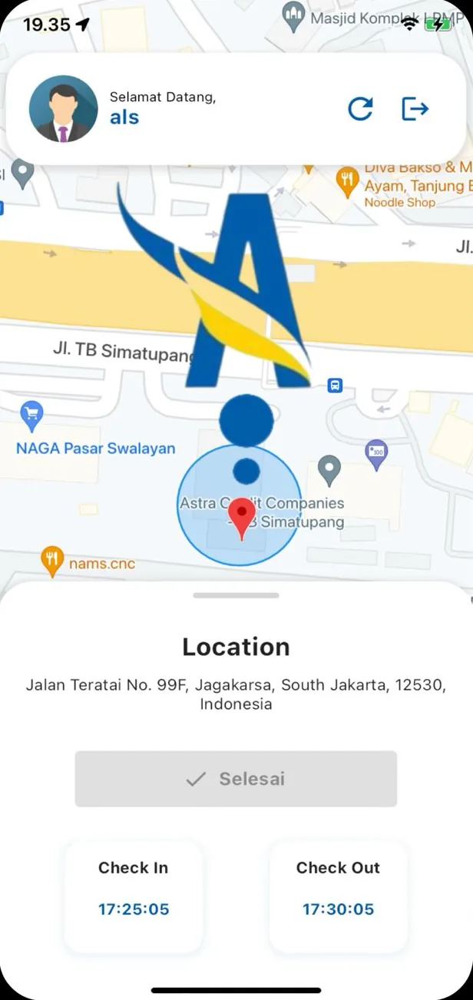
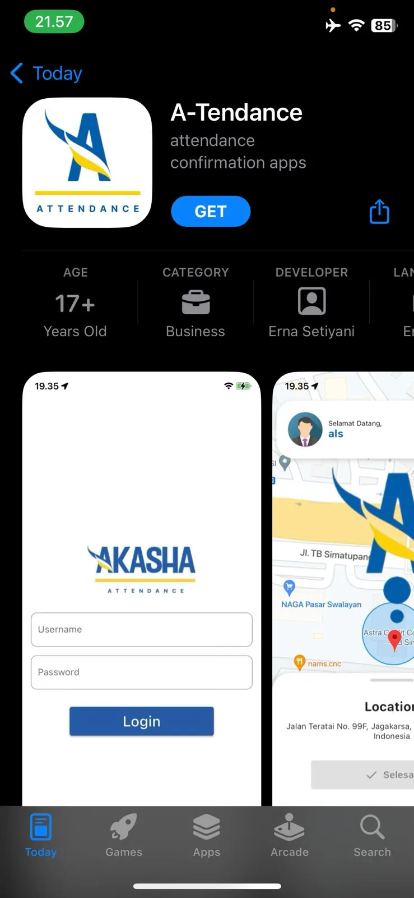
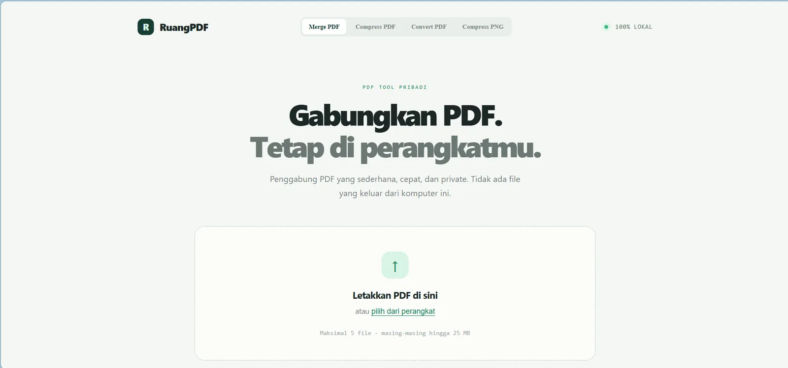
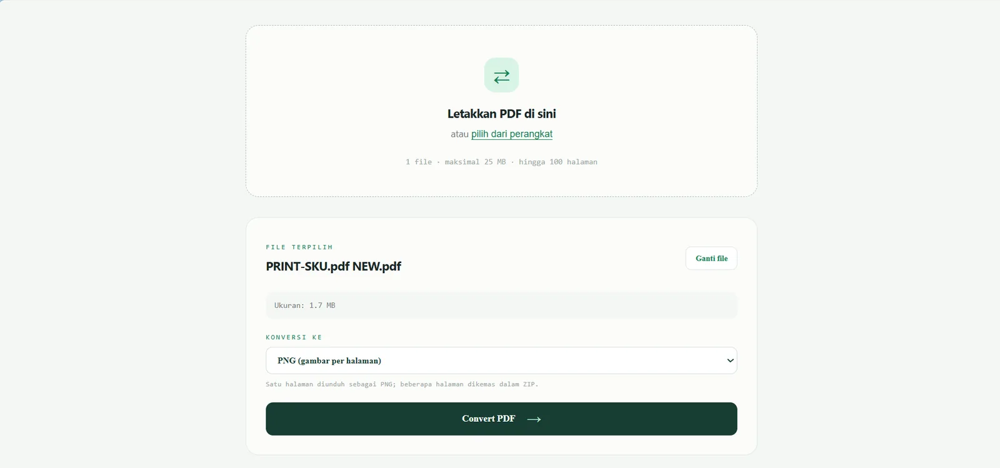

Rasyad Akmal Risqullah
Senior Full-Stack Developer & IT Manager
I design, build and run production systems end to end: ERP rollouts, healthcare platforms, e-commerce and mobile apps. From the database index to the firewall rule, I own what I ship.
Jakarta, Indonesia akmal.rasyad2513@gmail.com +62 822 9941 6186
rasyad@jakarta ~$ whoami
full-stack engineer, 3+ yrs in production
healthcare, e-commerce, enterprise ERP
rasyad@jakarta ~$ stack --core
laravel node react next flutter odoo
rasyad@jakarta ~$ stack --infra
postgresql redis docker nginx cloudflare
rasyad@jakarta ~$ status
✔ shipping to production, securely
Profile & experience
B.Eng. Computer Engineering, Diponegoro University
How I work
Full-stack developer with 3+ years delivering web and mobile systems for healthcare, e-commerce and enterprise. I move comfortably between business requirements, backend architecture and the servers it runs on.
- System integration. REST APIs that connect ERP, websites, labs and mobile apps without leaking credentials.
- Performance. Query tuning, indexing, PgBouncer, Redis queues and async jobs for high-volume records.
- Security by default. OWASP practices, hardened servers, Cloudflare, least-exposure firewalls; supported ISO 27001 alignment.
- Ownership. From requirement workshops with stakeholders to deployment and on-call fixes.
Experience
-
IT Manager, MyFum Official
Owns IT infrastructure, security, digital platforms and vendors. Leads the Odoo ERP rollout across POS, inventory, barcode and e-commerce.
-
Backend Developer, PT E-Tirta Medical Centre
Patient, laboratory, cashier and finance modules; Node.js lab-sync APIs; PostgreSQL functions, indexing and EXPLAIN ANALYZE tuning; PHPUnit; ISO 27001 hardening.
-
Fullstack Web Developer (Supervisor), PT Akasha Wira International Tbk
Led WooCommerce development with custom plugins that cut licensing costs; Odoo integration APIs; headless CMS on Laravel and AWS Lightsail.
Toolbox
Backend
Data
Frontend & mobile
ERP & commerce
DevOps & security
Certifications: Oracle Database Programming, Oracle Java Fundamentals (2022); Cisco CCNAv7 Introduction to Networks (2021); CCNA Routing & Switching (2020).
Rasyad Akmal Risqullah02 / 08
ERP & retail operations
MyFum ERP on Odoo 19
One system of record for stock, stores and members across two warehouses.
MyFum, a premium muslim fashion brand, needed POS sales, inventory and purchasing connected across its Makassar and Jakarta warehouses, with costing rules the business could trust.
What I built
- Implemented and customized Odoo 19: POS, Inventory, Barcode, Purchase, CRM and stock reporting.
- Inter-warehouse transfers and stock opname with locked counts and approval before any adjustment is posted.
- Cost of goods fixed at goods receipt (purchase price plus margin), with an option to update the sale price.
- Custom addons, including a POS withdrawal flow and the member-registration API used by the website.
- Production on Ubuntu 24.04: Cloudflare in front, Nginx with TLS and WebSocket proxy, private PostgreSQL 16, firewall open only on 22, 80 and 443.
Stack
My role: IT Manager and lead implementer, from requirement workshops to production deployment.

Featured project 1 of 503 / 08
E-commerce & integration
MyFum WooCommerce store
A premium storefront that feeds customers straight into the ERP and the shop counter.
The brand's online store had to sell, rank in search, and register members who are recognised instantly at any POS.
What I built
- WordPress and WooCommerce storefront with product attributes and variations, plus an input guide for the content team.
- Member registration that calls the ERP server-side with a Bearer token. The token never reaches the browser or the logs.
- Duplicate protection using canonical Indonesian phone numbers; new members appear as customers selectable in Odoo POS.
- Clear JSON responses for success, duplicate and validation cases, so the form always tells the user what to fix.
- Technical SEO with Yoast: canonical URLs, indexing rules and search appearance troubleshooting.
Stack
My role: Owner of the platform and the website-to-ERP integration, design to deployment.

Featured project 2 of 504 / 08
Healthcare platform
Portal MCU
Medical check-up projects, from bulk patient import to result delivery, without blocking anyone.
Corporate medical check-ups arrive as large batches of patient data and results that must be imported, processed and delivered reliably, every time.
What I built
- MCU project imports with Excel import and export, both synchronous and as background jobs.
- Redis-backed queues for heavy work: SFTP file transfer and transactional email through Brevo, with error handling on failed jobs.
- PostgreSQL behind PgBouncer, tuned with indexing and EXPLAIN ANALYZE for high-volume medical records.
- Containerized services with Docker, served through Nginx.
Stack
My role: Backend developer for imports, queues, integrations and database performance.

Featured project 3 of 505 / 08
Mobile app
A-tendance
Attendance that proves you are on site, not just that you tapped a button.
A Flutter attendance app where every check-in carries a verified location and a photo, ready to sit alongside an Odoo-style attendance model.
What I built
- Check-in and check-out validated against a 30 m geofence around the work location.
- Location refreshes after every 15 m of movement, keeping the status accurate without draining the battery.
- Mandatory camera photo on each attendance record.
- Map view of the user's position against the work area.
- Data model aligned with Odoo attendance (location and session), so records slot into HR.
- Shipped to the App Store: signing, permissions, plist configuration and crash fixes for camera and maps.
Stack
My role: Mobile developer, end to end through App Store release.




Featured project 4 of 506 / 08
Productivity tool
PDF & PNG merge and compress
Scans, images and PDFs in; one tidy, lightweight PDF out.
Teams handle mixed documents every day: scanned PDFs, phone photos and screenshots. This tool turns them into a single file that is small enough to upload or email.
What I built
- Merge multiple PDF files and PNG images into one PDF, in the order the user chooses.
- Compression of the output to cut file size for upload portals and email limits.
- Upload pipeline with file type and size validation before anything is processed.
- One-click download of the finished document.
Stack
My role: Sole developer, from idea to working tool.


Featured project 5 of 507 / 08
Let's build something
that stays up.
- Phone / WhatsApp
- +62 822 9941 6186
- Rasyad Akmal Risqullah
- Based in
- Jakarta, Indonesia
Open to senior full-stack roles, Odoo ERP implementation and system integration work, where reliability and security matter as much as features.
Thank you for reading08 / 08